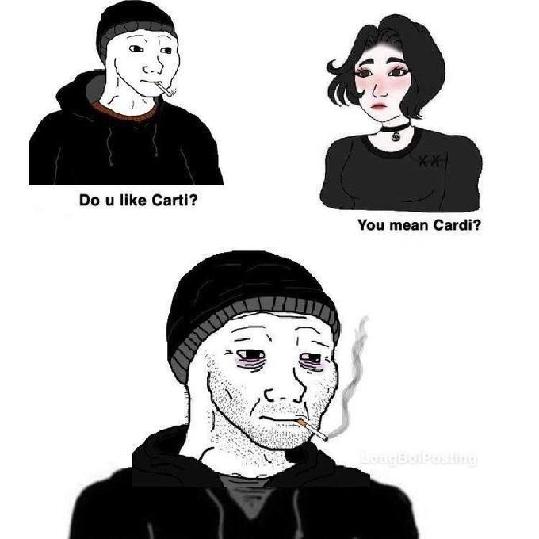
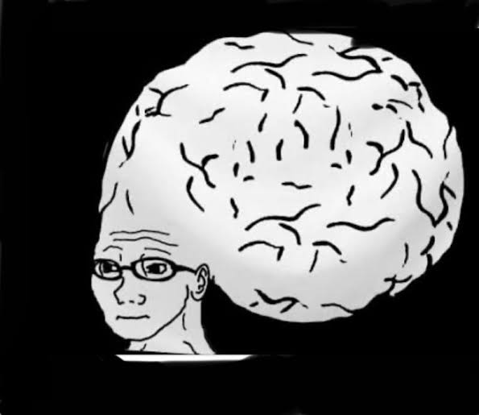
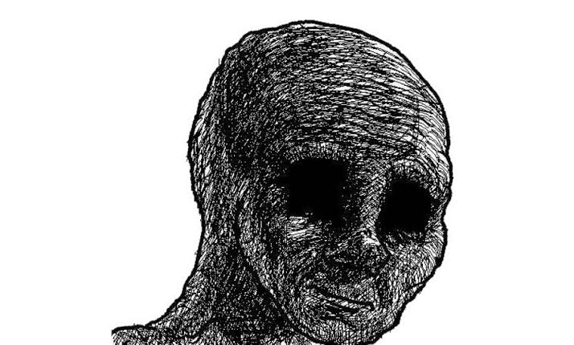

Wojak (meaning "soldier" in Polish) originated in 2009, created by a Polish internet user; it depicts a bald man with a melancholic expression, drawn in simple black outlines. It once enjoyed a period of popularity on 4chan and spawned a wide range of variations. Internet users employ different Wojak characters to craft stories, satirize social phenomena, or engage in self-deprecating humor.


